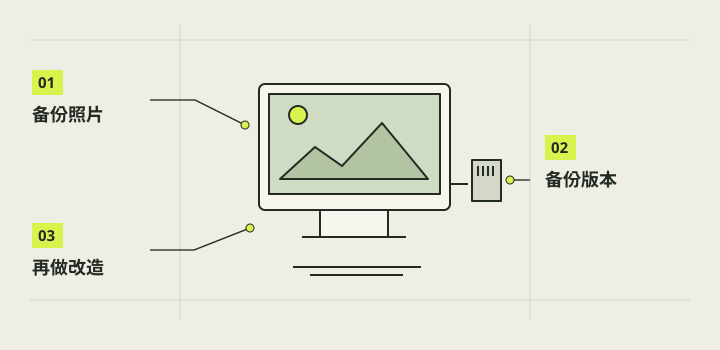

备份、维护与后续改造
可维护的相机需要能回答三个问题：现在装了什么、照片在哪里、出了问题怎样回到上一状态。把模型、切片参数、软件与样片分别留证，并让每次更换电池盒、拨杆档位或充电口都有记录。备份和恢复流程应先在电脑端核对，再根据实际设备版本执行。

本章完成目标
- 保存可追溯的模型、软件与照片副本
- 建立不损伤线束的维护和换件顺序
- 为后续改造保留清楚的基线与未验证项
开始前准备好
- 第15章至少已有一次桌面基础闭环记录
- 知道本机实际装上的模型和软件版本
- 准备独立于相机存储卡的备份位置
- 基线
- 一次已记录文件版本、硬件组合和测试结果的可回溯状态。
- 校验值
- 用于比较复制前后文件内容是否相同的摘要值。
- 回退
- 新版本出现问题后，按保存的资料恢复上一可用状态。
给当前整机建版本卡
写下主壳、03载架、05／06镜头框、A_down控件、电池07／09、充电口30／31／32、四只16扣和可选遮光斗的确切来源。当前整合包是V27共用件加V28／V29与A_down，不是整机所有件同一版本；使用V31新电池盒或G2充电口时把替换关系单列。记录实际软件版本和日期，不把尚未选档的V30 F／T或未装的N3写成已安装。
注意 / 同名3MF重存后可能改变内部刀路，发布或恢复前核对校验值。
把原图和制作资料分开备份
按第15章已验证的导出方式复制相机原始JPEG，保留原文件名、日期和目录关系，在独立存储位置随机打开几张并核对数量；重要拍摄可再保留第二份。另存当前STL、3MF、可编辑装配源、打印预设、零件清单、软件发布包及安装报告。模型交付目录中的私人实物照片、设备路径和凭据应与准备公开的素材分开，不把个人安装目录写成所有读者必须使用的运行路径。
注意 / 复制成功前不清空存储卡，也不把导出网页成功提示当作文件完整性证明。
按可逆顺序维护内部零件
定期检查盖扣、镜头锁键、拨杆回位、电池包膜和线根是否有裂纹、磨损或松动。维护时先正常关机、拔外部充电线、托底盖开盖，再露出并断开机内供电；拆V31整盒先释放6／7鞋键和Pi阻挡件，不能在机内撬胶缝。拆长销或拨杆盒架前清出线束和对应挡件。每次复装都重做合盖前压线检查和桌面基础功能，不把拆装成功等同于持续可靠。
注意 / 发现电池鼓起或破皮时停止使用并按电池自身安全规则处理。
软件更新先保留恢复材料
升级前保存现场版本、配置和最近拍摄证据，使用核验过的发布包与安装说明，并留回退入口。1.0首次实机安装因会话权限失败；10月29日修复报告显示boot、session已配置，状态staged，下一次正常开机及完整回归仍待验证。更新后在桌面重验预览、两种快门、保存、导出和正常关机；失败时保留报告，按该版本的受控流程回退。
注意 / 不要为软件问题随意改动原本稳定的供电或GPIO接线。
把新想法作为独立实验管理
后续材料、V30拨杆档、G2胶接、V31电池、N3遮光斗或新外形每次只改变可辨的一项，先做小样与数字检查，再做实物装配和第15章回归。记录材料批次、照片、失败原因和是否可回退；特别区分遮光斗概念图与已建模N3首版，不能把首页两侧概念机型写成有打印文件。准备公开模型时审查个人照片、凭据、授权与依赖，只发布已核对的文件清单，不自动复制整包历史资料。
注意 / 没有实物证据的卡扣力、胶接寿命和续航保持待验证。
完成后，逐项打勾。
勾选帮助你记录进度，不代表项目替你完成了实机验收。
遇到问题，从这里排查。
找不到某张照片的原始文件
按拍摄日期和实际存储目录查原始卡及备份清单，不先用缩略图替代。
新件装好后旧功能失效
按版本卡只回退本次改动，重测桌面闭环并保留失败件与照片。
本项目的实际进展
- 整合包及V31、G2、N3各有独立来源；公开模型须先核候选清单。
- Pi原图未随迁移包自动备份；单张诊断JPEG和传图反馈不等于长期备份或恢复演练。
资料与核对依据
- 当前完整结构资料 · camera-project/deliveries/20261028-structure-complete/Junshu_Camera_Final_Structure_20261028 2/00_先读.md
- E结构交接 · camera-project/E-结构/handoff.md
- F整机与零件交接 · camera-project/F-验收/handoff.md
- C软件交接 · camera-project/C-软件/handoff.md
- 1.0权限修复后实机安装报告 · camera-project/C-软件/qa/newcam-1.0/device-reports/20261029-005057-v1-repair-install-summary-c43f833093b74b8883b4a79df80f5062.json
资料核对日期：2026-10-30。不同硬件、系统版本和材料需要重新验证。